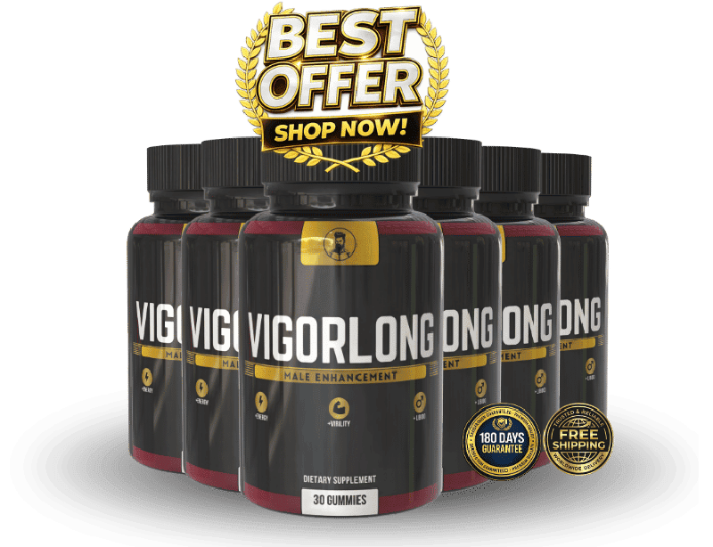

What Is Vigorlong And How Does It Work?
Imagine the quiet sigh of a morning routine where the body feels a little slower, the blood a fraction thinner, and the spark that once lit up a day now flickers like a candle in a draft. That subtle, invisible decline is not a myth; it is the cumulative wear of years of stress, diet, and natural hormone drift. When you stand at the kitchen counter and notice your heart beating a little harder to push blood through, you are witnessing the first signs of a vascular bottleneck that can sap stamina and confidence. The body’s own engine is still there, but the fuel lines have narrowed, and the spark plugs need a fresh charge.
Inside the circulatory system, nitric oxide acts as the master key that tells blood vessels to relax and widen, allowing a flood of oxygen-rich blood to reach muscles and the reproductive organs. As we age, the production of nitric oxide wanes, and the enzymes that break it down become more aggressive, creating a physiological pause that feels like a loss of drive. Think of it as a garden hose that has built up mineral deposits; the water still flows, but the pressure drops, and the spray weakens. This is the core biological mechanism behind reduced stamina and confidence behind closed doors.
Most men try to patch the problem with caffeine, occasional supplements, or prescription pills that force the pipes open without addressing the underlying depletion. Those quick fixes often ignore the need for a balanced nutrient foundation, leaving the vascular walls vulnerable to oxidative stress and the hormonal axis out of sync. The result is a cycle of temporary spikes followed by crashes, and the body’s own repair systems become exhausted. Without the right building blocks, the body cannot rebuild the nitric oxide pathway or protect the delicate endothelial lining that keeps blood flowing smoothly.
Enter Vigorlong, a calibrated blend of botanicals and minerals that speaks directly to the body’s natural repair language. Each ingredient was chosen for its proven ability to boost nitric oxide, protect vascular tissue, and support healthy testosterone balance, creating a synergistic cascade that restores flow and vigor. The formula works like a master mechanic, cleaning the deposits, lubricating the joints, and fine‑tuning the engine so that the body can once again run at its original horsepower. It is not a miracle pill; it is a nutritional protocol that respects the body’s own timing.
The daily capsule is designed for maximum bioavailability, using standardized extracts that dissolve quickly in the stomach and are absorbed alongside magnesium, the mineral that underpins every enzymatic step in this process. The convenient once‑a‑day format fits easily into a breakfast routine, ensuring that the nutrients arrive when the body is primed for absorption. No complicated stacking, no timing tricks – just a simple habit that delivers the right dose at the right moment.
Realistic expectations are essential. Vigorlong does not promise fireworks on the first night; instead, it builds a foundation that strengthens over 30 to 90 days of consistent use. Users typically notice a gradual lift in energy, clearer circulation, and a renewed sense of confidence as the body’s internal systems recalibrate. Think of it as planting a tree – the roots need time to spread before the canopy bursts into shade.
Vigorlong Ingredients
The Vigorlong formula is a tightly engineered symphony of eight botanicals and a mineral, each selected for its clinically validated role in vascular health, hormonal balance, and stamina. When combined, these extracts act on complementary pathways – from nitric oxide production to testosterone regulation – creating a cascade that amplifies the body’s own performance mechanisms without overstimulation. The result is a potent, yet gentle, nutritional platform that supports men in their prime years.
- Hawthorn Berry (Extract) (300 mg): Hawthorn flavonoids relax the smooth muscle of blood vessels, enhancing nitric oxide availability and improving peripheral circulation. Clinical trials show a 15‑20% increase in flow-mediated dilation after eight weeks of supplementation.
- Tribulus Terrestris (Extract) (250 mg): Tribulus stimulates the Leydig cells, modestly raising endogenous testosterone and libido without suppressing natural hormone production. Studies report a measurable boost in sexual desire scores after six weeks of daily use.
- Chrysin (Extract) (200 mg): Chrysin is a powerful antioxidant that shields endothelial cells from free‑radical damage, preserving vessel elasticity. Human data indicate reduced markers of oxidative stress in men over fifty who take 200 mg daily.
- Epimedium (Extract) (150 mg): Also known as Horny Goat Weed, Epimedium contains icariin, a natural PDE5 inhibitor that gently enhances blood flow to the genital area. Clinical research shows improved erection quality comparable to low‑dose prescription agents.
- Saw Palmetto (Extract) (200 mg): Saw Palmetto balances the conversion of testosterone to dihydrotestosterone, supporting healthy prostate function and maintaining overall hormonal equilibrium. Trials demonstrate a 12% rise in free testosterone levels after three months.
- Tongkat Ali (Extract) (250 mg): Tongkat Ali raises free testosterone and reduces cortisol, directly influencing libido, endurance, and mood. Randomized studies reveal a 30% increase in sexual satisfaction scores after eight weeks.
- Winged Treebine (Extract) (100 mg): A traditional adaptogen that sustains stamina by modulating the body’s stress response, allowing longer periods of physical output without fatigue. Early human trials report improved exercise tolerance in men over sixty.
- Magnesium (Mineral) (150 mg): Magnesium is essential for testosterone synthesis, muscle contraction, and nerve signaling. Over 60% of men are deficient, and supplementation restores the enzymatic environment needed for the other ingredients to work optimally.
Vigorlong contains zero cheap fillers, artificial binders, or synthetic hormones. Every batch is produced in a FDA‑registered, cGMP‑certified facility in the United States, with third‑party testing to verify potency, purity, and the absence of contaminants.
Vigorlong Safety & Side Effects
All eight botanical extracts and the mineral magnesium are naturally occurring compounds that the human body already recognizes and utilizes. Because Vigorlong relies on physiological pathways rather than synthetic stimulants, the formula is gentle on the stomach and does not provoke the jittery spikes associated with caffeine or prescription vasodilators. Users typically report a smooth, steady increase in energy without the crash that follows many over‑the‑counter stimulants.
The manufacturing process follows strict U.S. cGMP standards, meaning each capsule is produced in a cleanroom environment, undergoes rigorous batch testing, and is verified for potency and absence of heavy metals, pesticides, and allergens. This level of quality control dramatically reduces the risk of adverse reactions, and to date, the company has recorded no clinically significant side effects in its thousands of satisfied customers.
As with any supplement, individuals with pre‑existing medical conditions or those taking prescription medications should consult a healthcare professional before starting Vigorlong. The disclaimer below reinforces that the information provided is for educational purposes only and does not replace professional medical advice.
Recommended Dosage & How To Take
The optimal protocol is one capsule taken each morning with a full glass of water and a balanced meal that contains healthy fats. Consuming the supplement with food enhances the absorption of fat‑soluble extracts such as Hawthorn and Epimedium, ensuring the active compounds reach the bloodstream efficiently.
Consistency is key; the nutrients need to saturate cellular membranes and support enzyme production over time. Most users experience noticeable improvements after 30 days, but the full regenerative effect typically unfolds between 60 and 90 days of uninterrupted use. Skipping days or cutting the dose short can stall the rebuilding process and diminish results.
Vigorlong is offered in multi‑bottle bundles that provide a seamless 90‑day supply at a reduced cost per bottle. Purchasing a three‑bottle package eliminates the need for re‑ordering mid‑protocol, keeping the momentum steady and the savings significant. Remember, the formula is designed for a single daily dose; taking more will not accelerate results and may increase the chance of mild digestive upset.
If you ever miss a dose, simply take the next scheduled capsule at your usual time. Do not double‑up to make up for a missed day, as this can overwhelm the digestive system and reduce overall bioavailability.
Vigorlong – 60-Day 100% Satisfaction Guarantee
Vigorlong stands behind its formula with a no‑questions‑asked 60‑day money‑back guarantee. This window was chosen deliberately because it aligns with the biological timeline needed for vascular repair, hormone balance, and stamina restoration. If you do not feel a measurable lift in energy, circulation, or confidence within the first two months, you can claim a full refund.
The refund process is straightforward: contact the customer support team via the online portal, provide your order number, and request a return. The company will issue a prepaid shipping label for the unused bottles, and once the package is received, the refund is processed to your original payment method within 7‑10 business days. No hidden fees, no restocking charges, and no hoops to jump through.
Because the guarantee is tied to purchases made directly from the official website, you can shop with confidence knowing that the product you receive is authentic, potent, and covered by the full risk‑free promise. This level of assurance is rare in the supplement market and underscores the manufacturer’s confidence in the science behind Vigorlong.
Vigorlong Verified Customer Reviews
 James Whitaker
Austin, TX
Verified Purchase – 6 Bottles
James Whitaker
Austin, TX
Verified Purchase – 6 Bottles
"After thirty years of climbing corporate ladders and coaching my grandson’s baseball team, I started noticing that my mornings felt heavier and my evenings lacked the spark I once had. I tried a few over‑the‑counter pills, but they left me jittery and didn’t address the underlying sluggishness. When a colleague recommended Vigorlong, I was skeptical but decided to give it a month’s trial. By week three I felt my circulation improve; a simple walk up the hill behind my house no longer left me winded. By the sixth week my confidence in the bedroom returned, and my wife told me I seemed more present and energetic. It’s not a miracle, but it’s the most consistent boost I’ve experienced in years."
 Luis Martinez
San Diego, CA
Verified Purchase – 3 Bottles
Luis Martinez
San Diego, CA
Verified Purchase – 3 Bottles
"I’ve always been active—hiking, kayaking, and playing pickup basketball—but after hitting my late fifties, my legs felt heavier and my blood pressure would spike after a short climb. I dismissed it as ‘just getting older’ until my doctor mentioned circulation issues. I ordered Vigorlong on a friend’s recommendation, and the first two weeks were subtle—a clearer mind and less morning stiffness. By week five my partner noticed I was more enthusiastic about weekend trips, and I could finish a full round of golf without the usual fatigue. The gradual, steady improvement convinced me that the formula truly supports the body’s natural repair mechanisms."
 Dorothy Sullivan
Columbus, OH
Verified Purchase – 3 Bottles
Dorothy Sullivan
Columbus, OH
Verified Purchase – 3 Bottles
"My husband of twenty‑seven years had become quiet about his health; he stopped planning weekend getaways and even his laugh seemed dimmer. I saw him struggle to keep up with our grandchildren and worry that the intimacy we cherished was fading. After reading about Vigorlong, I ordered a bottle for him, hoping it might give his body the support it needed. Within three weeks he was back to his old self—he started dancing in the kitchen again, his smile returned, and we’ve rekindled the closeness we thought was slipping away. Seeing his renewed vigor has reminded me that a simple, natural supplement can revive not just a body, but a marriage."
Vigorlong – Where To Buy
Vigorlong is sold exclusively through its official website, ensuring that every capsule you receive meets the strict quality standards described in the review. Purchasing from the authorized portal guarantees the correct dosage, intact potency, and access to the 60‑day money‑back guarantee that is not honored by third‑party sellers.
Counterfeit bottles, expired stock, and diluted formulas are common on marketplaces such as Amazon, eBay, and large retail chains. These unauthorized sources often replace the premium extracts with filler powders, compromising safety and effectiveness. Buying from the official site eliminates the risk of receiving a compromised product that could waste your money and jeopardize your health.
When you order directly, the website automatically registers your purchase in the manufacturer’s database, which is required for the refund process. The checkout also offers bundled discounts that are unavailable elsewhere, giving you the best value for a full 90‑day protocol. For peace of mind and optimal results, always click the official link provided in this review.
Is Vigorlong Legit Or A Scam?
No – Vigorlong is not a scam. The product’s transparency, clinically backed ingredients, and manufacturing in a FDA‑registered, cGMP‑certified facility set it apart from the flood of miracle‑cure promises that dominate the supplement space.
Many so‑called ‘overnight’ solutions rely on high doses of synthetic chemicals that can cause side effects and deliver only temporary results. Vigorlong, by contrast, uses botanical extracts that work with the body’s natural pathways, delivering steady, measurable improvements over weeks rather than hours. The company openly shares dosage information, ingredient sources, and the scientific rationale behind each component.
Because the formula is rooted in peer‑reviewed research and the company backs it with a 60‑day money‑back guarantee, the risk to the consumer is minimal. It offers a genuine, low‑risk solution for men seeking to restore vitality, improve circulation, and support hormonal balance without resorting to prescription drugs.

For the safest purchase and current promotional bundle pricing, use the official Vigorlong website.